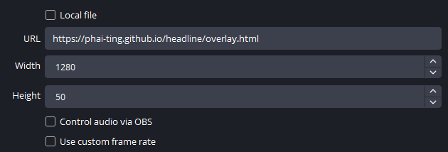
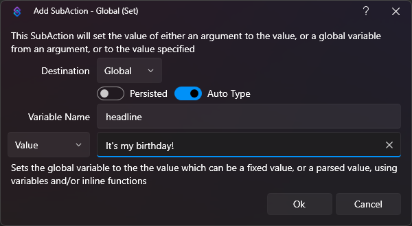

Create a Browser source in OBS.

In Streamer.bot you will need to set the desired headline as a Non-Persisted Global variable (Core - Globals - Global Set) called "headline". You can do this in an action triggered by a command or however you want. To make the headline overlay hide, clear out the global headline variable (Core - Globals - Global Set).

Note: If you are running the Streamer.Bot websocket service on a port other than 8080, you can specify that in the overlay URL by adding "#port=<port>"
For example: https://phai-ting.github.io/headline/overlay.html#port=48080